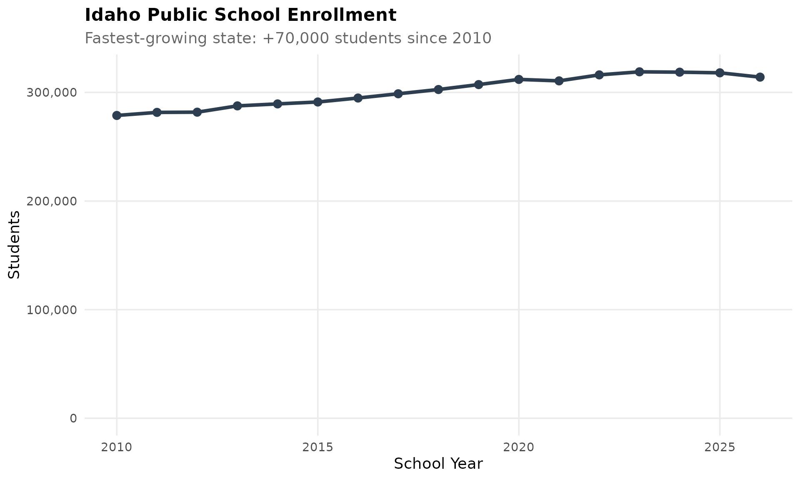
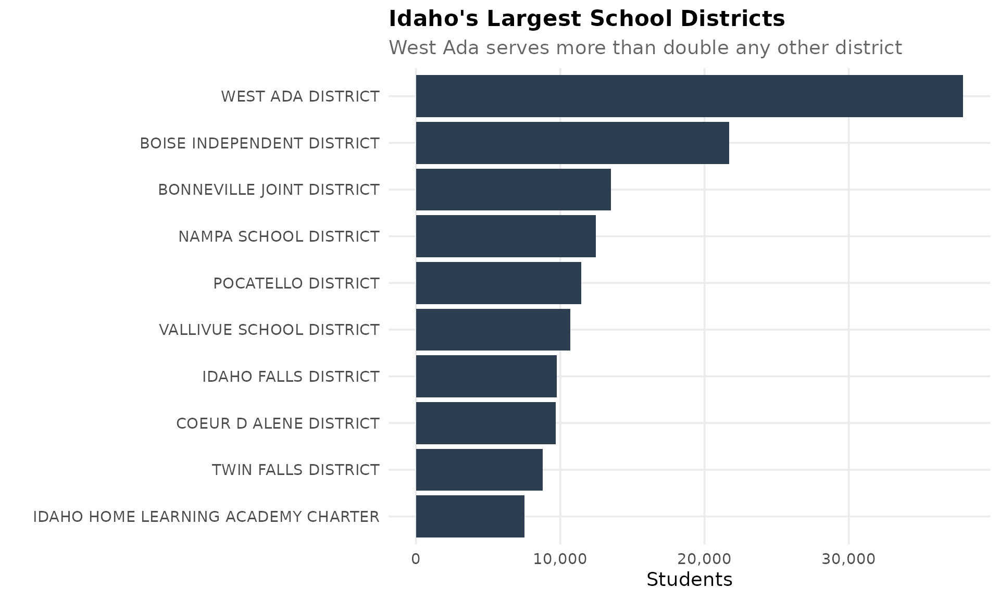
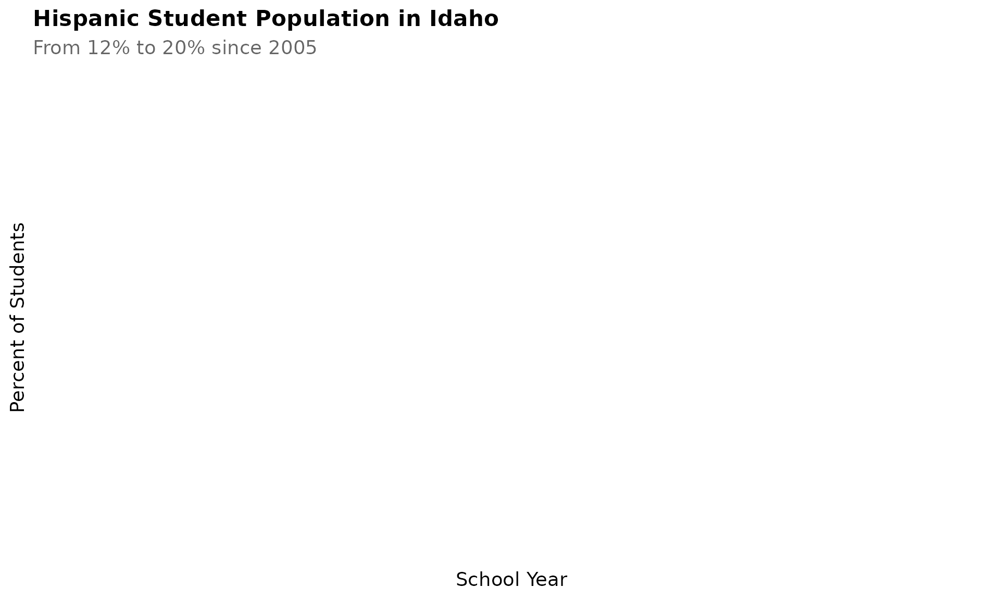
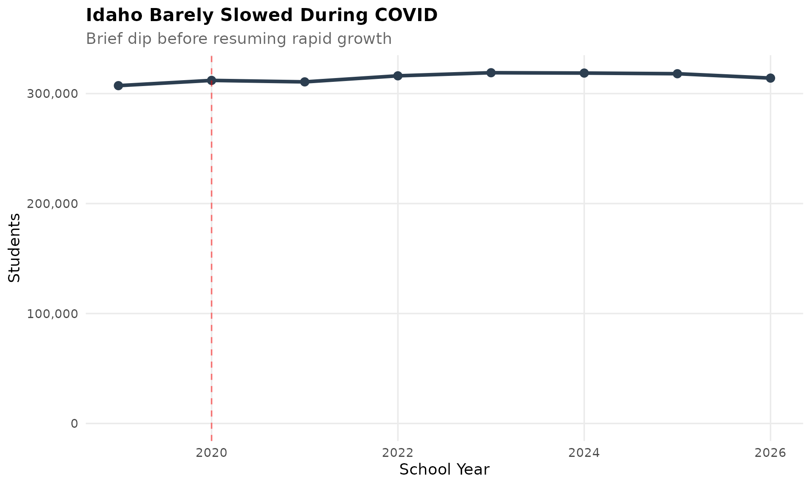
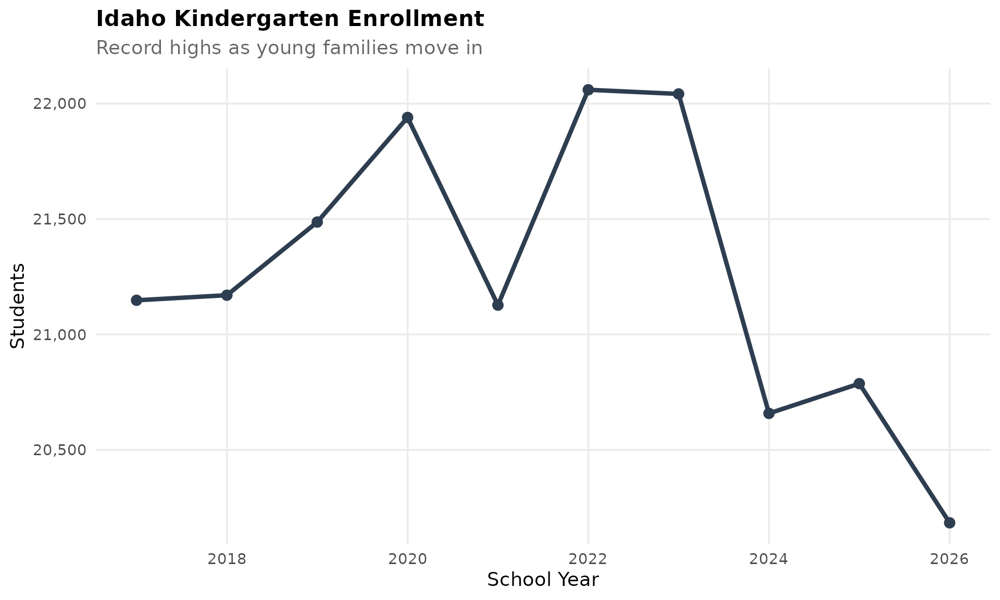
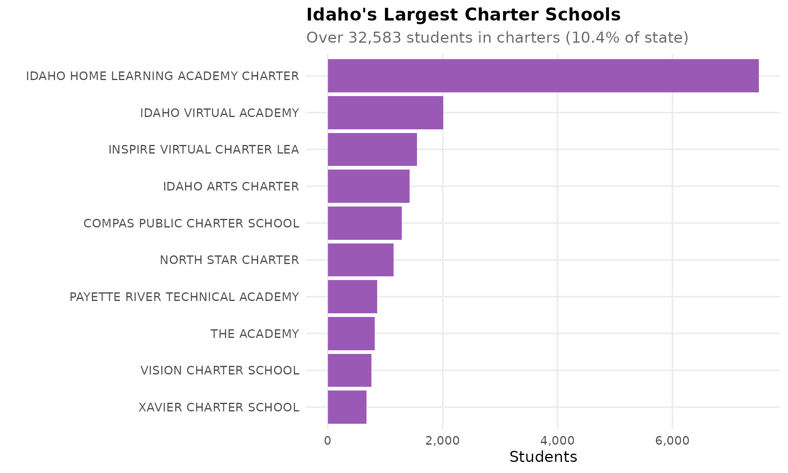
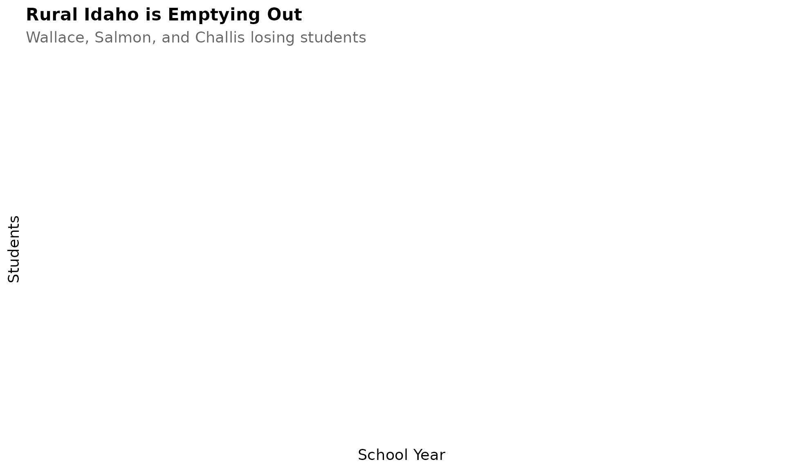
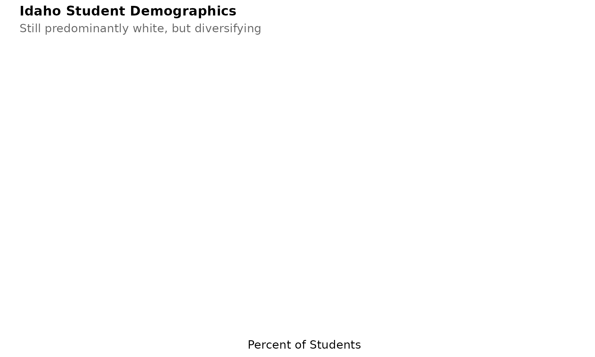
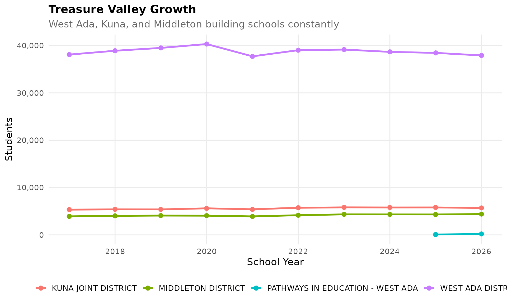
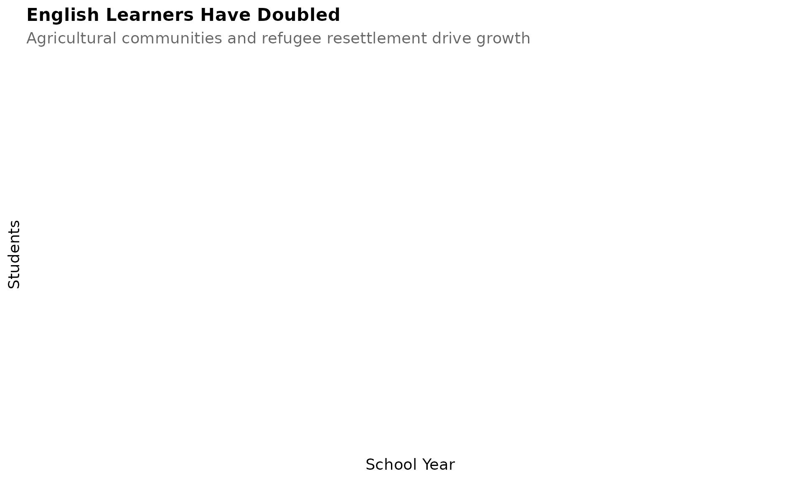

theme_readme <- function() {
theme_minimal(base_size = 14) +
theme(
plot.title = element_text(face = "bold", size = 16),
plot.subtitle = element_text(color = "gray40"),
panel.grid.minor = element_blank(),
legend.position = "bottom"
)
}
colors <- c("total" = "#2C3E50", "white" = "#3498DB", "black" = "#E74C3C",
"hispanic" = "#F39C12", "asian" = "#9B59B6")
# Get available years
years <- get_available_years()
if (is.list(years)) {
max_year <- years$max_year
min_year <- years$min_year
} else {
max_year <- max(years)
min_year <- min(years)
}
# Fetch data
enr <- fetch_enr_multi(max(min_year, 2010):max_year)
enr_recent <- fetch_enr_multi((max_year - 9):max_year)
enr_current <- fetch_enr(max_year)1. Idaho is the fastest-growing state for schools
Idaho added 70,000 students since 2010, a 25% increase. Tech workers fleeing California and families seeking affordability are reshaping the state.
state_trend <- enr %>%
filter(is_state, grade_level == "TOTAL", subgroup == "total_enrollment")
ggplot(state_trend, aes(x = end_year, y = n_students)) +
geom_line(linewidth = 1.5, color = colors["total"]) +
geom_point(size = 3, color = colors["total"]) +
scale_y_continuous(labels = comma, limits = c(0, NA)) +
labs(title = "Idaho Public School Enrollment",
subtitle = "Fastest-growing state: +70,000 students since 2010",
x = "School Year", y = "Students") +
theme_readme()
2. West Ada (Meridian) is Idaho’s school giant
West Ada School District in suburban Boise serves over 40,000 students, more than double any other district. It grows by 1,000+ students per year.
enr_current %>%
filter(is_district, grade_level == "TOTAL", subgroup == "total_enrollment") %>%
arrange(desc(n_students)) %>%
select(district_name, n_students) %>%
head(10) %>%
mutate(district_label = reorder(district_name, n_students)) %>%
ggplot(aes(x = district_label, y = n_students)) +
geom_col(fill = colors["total"]) +
coord_flip() +
scale_y_continuous(labels = comma) +
labs(title = "Idaho's Largest School Districts",
subtitle = "West Ada serves more than double any other district",
x = "", y = "Students") +
theme_readme()
3. The Hispanic surge continues
Hispanic students went from 12% to 20% of enrollment since 2005. The Treasure Valley and Magic Valley regions are transforming.
hispanic <- enr %>%
filter(is_state, grade_level == "TOTAL", subgroup == "hispanic")
ggplot(hispanic, aes(x = end_year, y = pct * 100)) +
geom_line(linewidth = 1.5, color = colors["hispanic"]) +
geom_point(size = 3, color = colors["hispanic"]) +
labs(title = "Hispanic Student Population in Idaho",
subtitle = "From 12% to 20% since 2005",
x = "School Year", y = "Percent of Students") +
theme_readme()
Twin Falls and Caldwell school districts are now over 40% Hispanic.
4. COVID barely slowed Idaho’s growth
While most states lost students during COVID, Idaho’s enrollment dipped only briefly before resuming growth. Families moved to Idaho during the pandemic.
covid_years <- enr %>%
filter(is_state, grade_level == "TOTAL", subgroup == "total_enrollment",
end_year %in% 2019:max_year)
ggplot(covid_years, aes(x = end_year, y = n_students)) +
geom_line(linewidth = 1.5, color = colors["total"]) +
geom_point(size = 3, color = colors["total"]) +
geom_vline(xintercept = 2020, linetype = "dashed", color = "red", alpha = 0.5) +
scale_y_continuous(labels = comma, limits = c(0, NA)) +
labs(title = "Idaho Barely Slowed During COVID",
subtitle = "Brief dip before resuming rapid growth",
x = "School Year", y = "Students") +
theme_readme()
5. Kindergarten enrollment hit record highs
Idaho’s kindergarten class keeps growing, unlike most states where it’s shrinking. Young families are moving in faster than they’re moving out.
k_trend <- enr_recent %>%
filter(is_state, subgroup == "total_enrollment", grade_level == "K")
ggplot(k_trend, aes(x = end_year, y = n_students)) +
geom_line(linewidth = 1.5, color = colors["total"]) +
geom_point(size = 3, color = colors["total"]) +
scale_y_continuous(labels = comma) +
labs(title = "Idaho Kindergarten Enrollment",
subtitle = "Record highs as young families move in",
x = "School Year", y = "Students") +
theme_readme()
6. Charter schools educate 1 in 12 students
Idaho has over 60 charter schools serving 30,000 students. Charter growth has been explosive, especially in the Treasure Valley.
charter <- enr_current %>%
filter(grepl("Charter|Academy", district_name, ignore.case = TRUE),
grade_level == "TOTAL", subgroup == "total_enrollment")
charter_total <- sum(charter$n_students, na.rm = TRUE)
state_total <- enr_current %>%
filter(is_state, grade_level == "TOTAL", subgroup == "total_enrollment") %>%
pull(n_students)
charter %>%
arrange(desc(n_students)) %>%
head(10) %>%
mutate(district_label = reorder(district_name, n_students)) %>%
ggplot(aes(x = district_label, y = n_students)) +
geom_col(fill = colors["asian"]) +
coord_flip() +
scale_y_continuous(labels = comma) +
labs(title = "Idaho's Largest Charter Schools",
subtitle = paste0("Over ", format(charter_total, big.mark = ","),
" students in charters (",
round(charter_total / state_total * 100, 1), "% of state)"),
x = "", y = "Students") +
theme_readme()
7. Rural Idaho is emptying out
While Boise suburbs boom, northern and eastern Idaho districts are shrinking. Wallace, Salmon, and Challis have half the students they had 20 years ago.
rural <- c("Wallace Jt", "Salmon School", "Challis Jt")
rural_trend <- enr %>%
filter(is_district,
grepl(paste(rural, collapse = "|"), district_name, ignore.case = TRUE),
subgroup == "total_enrollment", grade_level == "TOTAL")
ggplot(rural_trend, aes(x = end_year, y = n_students, color = district_name)) +
geom_line(linewidth = 1.2) +
geom_point(size = 2.5) +
scale_y_continuous(labels = comma) +
labs(title = "Rural Idaho is Emptying Out",
subtitle = "Wallace, Salmon, and Challis losing students",
x = "School Year", y = "Students", color = "") +
theme_readme()
8. 90% white, but changing
Idaho remains one of the whitest states, but diversity is increasing. Asian and multiracial student populations are growing fastest.
enr_current %>%
filter(is_state, grade_level == "TOTAL",
subgroup %in% c("white", "hispanic", "asian", "multiracial",
"black", "native_american", "pacific_islander")) %>%
mutate(subgroup_label = reorder(subgroup, pct)) %>%
ggplot(aes(x = subgroup_label, y = pct * 100)) +
geom_col(fill = colors["total"]) +
coord_flip() +
labs(title = "Idaho Student Demographics",
subtitle = "Still predominantly white, but diversifying",
x = "", y = "Percent of Students") +
theme_readme()
9. The Treasure Valley is building schools constantly
Eagle, Kuna, and Star are among the fastest-growing areas in America. New schools open every year, and they fill up immediately.
treasure <- c("West Ada", "Kuna", "Middleton")
treasure_trend <- enr_recent %>%
filter(is_district,
grepl(paste(treasure, collapse = "|"), district_name, ignore.case = TRUE),
subgroup == "total_enrollment", grade_level == "TOTAL")
ggplot(treasure_trend, aes(x = end_year, y = n_students, color = district_name)) +
geom_line(linewidth = 1.2) +
geom_point(size = 2.5) +
scale_y_continuous(labels = comma) +
labs(title = "Treasure Valley Growth",
subtitle = "West Ada, Kuna, and Middleton building schools constantly",
x = "School Year", y = "Students", color = "") +
theme_readme()
10. English Learners have doubled
Idaho’s ELL population grew from 15,000 to 30,000 students since 2010. Agricultural communities and refugee resettlement drive this growth.
ell <- enr %>%
filter(is_state, grade_level == "TOTAL", subgroup == "lep")
ggplot(ell, aes(x = end_year, y = n_students)) +
geom_line(linewidth = 1.5, color = colors["total"]) +
geom_point(size = 3, color = colors["total"]) +
scale_y_continuous(labels = comma, limits = c(0, NA)) +
labs(title = "English Learners Have Doubled",
subtitle = "Agricultural communities and refugee resettlement drive growth",
x = "School Year", y = "Students") +
theme_readme()